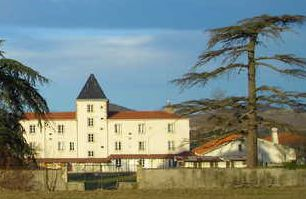
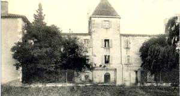
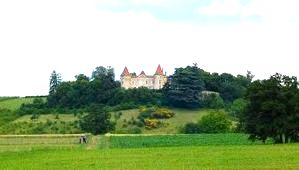
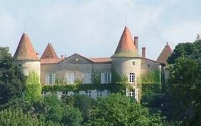

Recensement Jean-Claude Truffet
| Département | 63 — Puy-de-Dôme |
| Canton | Billom |
| Commune | Egliseneuve |
| Type d'édifice | Château |
| Période d'origine | XV-XVI |




EGLISENEUVE, trois châteaux dans cette commune. AUTEYRAS, avant 1280, Aymeric d'Auteyras est seigneur. Vers 1370, Marguerite, dame d'Auteyras, porte le château par mariage à Jean Lespes dit de Valens. Au XVIe siècle, il passe par héritage à Fiacre de Laire, fils de Jacques, qui est seigneur de Laire, des Cornets et de la Broussolière. En 1571, Madeleine de Laire l'apporte par mariage à Jacques du Croc, seigneur du Mas et de Neuville. En 1622 Madeleine du Croc, leur fille. épouse Henri de Malras, seigneur d'Yole dans le Cantal. En 1675, François de Malras, chevalier, Comte d'Yolet, est seigneur de La Fouilhouse, Beaulieu et Le Cheix, habite au château d'Auteyras. Ses héritiers le conservent jusqu'en 1768.
PEYROUSE, avant 1645, Charles de Bertaud est seigneur de Pouzadoux et La Peyrouse. En 1667 et 1696 le fief est encore aux Bertaud, ce sont eux sans doute qui font les grands travaux. En 1762 il appartient aux Jésuites de Billom. En 1921, la société Michelin en fait une école de filles tenue par les soeurs de Saint-Vincent de Paul. En 1956, l'école est reconvertie et devient un établissement public. ESCOLORE, en 1455, le château est à Antoine du Cros, seigneur de Saint-Bonnet. Avant 1599, Pierre du Croc est seigneur du Mas, Autheiras et Escolore. En 1672, Louise de Montboissier-Beaufort-Canillac, veuve de François de Maltras, rend hommage à l'évêque de Clermont pour sa baronnie d'Escolore. Après 1768, la propriété passe par héritage à Marie de Maltras qui épouse Gilbert-Claude de Montagnac, marquis des lignières.
Auteyras, château construit vers 1300, situé à 1 km au nord ouest du bourg, au lieu dit Mas d'Auteyras. Enceinte quadrangulaire à trois flanquements circulaires et un flanquement carré. L'enceinte intègre près d'un angle un donjon logis carré antérieur. Les logis ont été remaniés au XVIIe siècle. Peyrousse, château construit au XIVe siècle, à 1500 mètres au sud est du bourg près de la rive sud. Haut donjon rectangulaire de cinq étages, un escalier en vis intérieur en occupe un angle. On lui a accolé de part et d'autre des bâtiments plus récents. Près du château "La Roche aux Fées", grande table en pierre, posée horizontalement sur un rocher, creusée de cavités faites de main dhomme, c'est le plus ancien témoignage connu dune occupation humaine sur le territoire de la commune. Escolore, cité parfois sous l'appellation château des Méradoux, daterait du XIVe ou du XVe siècle ; , situé au sud-ouest du bourg, à 200 m au lieu-dit "le Château" . Très grande enceinte à flanquements circulaires d'angle pourvus d'archères-canonnières. La première mention connue de la seigneurie d'Escolore date de 1416 , seuls quelques vestiges de ce château ont été conservés, tour au nord-ouest, vestiges de murs d'enceinte avec meurtrières et canonnières à l'ouest et au nord, lorsque le château est acheté par les seigneurs d'Autheiras en 1614, la tour est déjà en ruine, il semble que l'édifice continue à se dégrader au cours des XVIIe et XVIIIe siècles, puisqu'en 1820 il est considéré comme château ruiné, c'est sans doute peu après cette date que la propriété est lotie, des fermes sont édifiées sur les vestiges du château, un logis sur étable au nord-ouest daté de 1826, après 1834, à l'ouest, une grange a été bâtie contre l'ancien mur d'enceinte et un ancien bâtiment sur caves a été arasé, à l'est, un atelier, dit boutique, peut-être pour le traitement du chanvre, est aménagé en 1852, en 1870, une autre ferme est construite au sud-est.
Famille d'Aymeric d'Auteyras Famille de Charles de Bertaud Famille de Pierre du Croc
"
Château d'Auteyras de la Peyrouse et d'Escolore